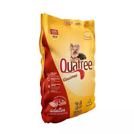

 RAÇAO QUATREE SABOR: FRANGO COMPRE AQUI! RAÇAO QUATREE SABOR: CARNE COMPRE AQUI! RAÇAO QUATREE SABOR: VEGETAL COMPRE AQUI! RAÇAO QUATREE SABOR: FRANGO COMPRE AQUI! RAÇAO QUATREE SABOR: CARNE COMPRE AQUI! RAÇAO QUATREE SABOR: VEGETAL COMPRE AQUI! REMEDIO COMPRE AQUI!